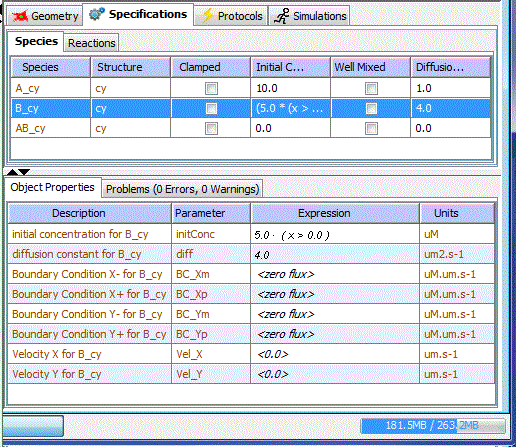
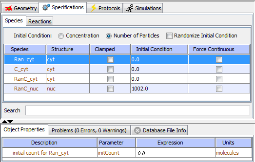

For any application, the species initial conditions need to be set. In addition, other parameters like diffusion constant, boundary conditions and velocity terms for species need to be specified for spatial applications. This is done in the Specifications tab of an Application.
Deterministic

Spatial Stochastic
Non-Spatial Stochastic


Viewing/Editing Species Specifications
Specifications can be accessed by selecting the 'Specifications' item under the application node in the 'Navigation' panel tree structure. This displays the application in the 'View' panel on the right, with the Specifications tab selected. This view has 2 sub-tabs - one for 'Species' and another for 'Reactions'. Selecting the Species tab in the 'Specifications' tab displays a table of the species in the model, with their location, initial conditions, etc. The table columns are sortable. Only the 'Initial Conditions' and 'Diffusion Constant' (in spatial applications) columns are editable.
Initial Conditions
Double clicking the 'Initial Conditions' column allows the user to input an numeric value or an expression for the initial condition for the concentration of the selected species. An equation may be used to restrict the concentration variable to a certain region within the model. For example, you might restrict the concentration of a variable, 1000, to a given region, defined by the y coordinates, by the following equation: ((1000.0 * (y>= 0.89))). In addition you may also define such concentrations in respect to another variable, a time dependent component or Field Data (see Field Data).
Note: spatial variables 'x', 'y', 'z' are not allowed in expressions for initial conditions in non-spatial (compartmental) applications.
In stochastic applications, the user can choose to specify initial condition of a species either as concentration or as number of particles by choosing the appropriate radio button. If the initial concentration is specified and the user chooses the 'number of particles' option, the initial concentration is converted to number of particles.
Clamped Concentration
A species concentration can be set to 'Clamped'. The concentration of the selected species maintains a constant state; the species is neither broken down nor produced, nor does it diffuse. The species in this case is no longer a variable but instead becomes a parameter and the diffusion constant is disabled. Known concentrations may be held constant in a reaction in order to aid in determining unknown concentrations of other species elements.
Diffusion Constant
The 'Diffusion Constant' column in the table is available only for spatial applications. When present, double clicking in the column allows the user to enter a numeric value or expression to define the Diffusion Rate in a spatially dependent manner or as a value. As an example, the diffusion constant may be spatially defined by the following equation: (300.0*(y>4.0)), where the value of 300 is confined within the area defined by the y coordinates. In addition, the user may also define diffusion with a time dependent component.
Boundary Conditions
For spatial models, the type of Boundary Condition is set in Structure Mapping. The default Boundary Conditions for a given species at each boundary (X-,X+, Y-, Y+, Z-, Z+) are fixed at either zero, when using Flux, or the concentration set in the Initial Condition field, when using Value type. You can provide a numerical value or expressions for each boundary to provide a rate of flux ('Flux') or a clamped concentration different from that entered in the Initial Conditions field ('Value').
Velocity
Directed transport can be specified within the Virtual Cell as velocities in 2D and 3D spatial models. The velocities provided by the user are used to calculate the velocities of the species at any location within the model. Velocities can be provided as constant values or as a function of spatial coordinates, x,y,z as well as time.
The Boundary Conditions and Velocity terms for a species in a spatial application can be set when a species is selected in the 'Initial Conditions' table. This selection displays an Initial Conditions Property Pane in the 'Properties Panel' below.
Stochastic applications (see Stochastic figure) have additional specification parameters. The 'Concentration' and 'Number of Particles' buttons (any stochastic application) determine how the 'Initial Condition' column values are interpreted and displayed. The 'Randomize Initial Condition' (non-spatial stochastic application) when checked tells the solver to select an initial condition value from a Poisson distribution with the user defined initial condition as the mean of the Poisson distribution. The Force Continuous column (spatial stochastic) indicates the spatial stochastic solver should treat any checkbox selected species row as a deterministic (continuous) variable. Spatial stochastic applications with 1 or more 'force Continuous' checkboxes selected are considered to be 'hybrid stochastic'.